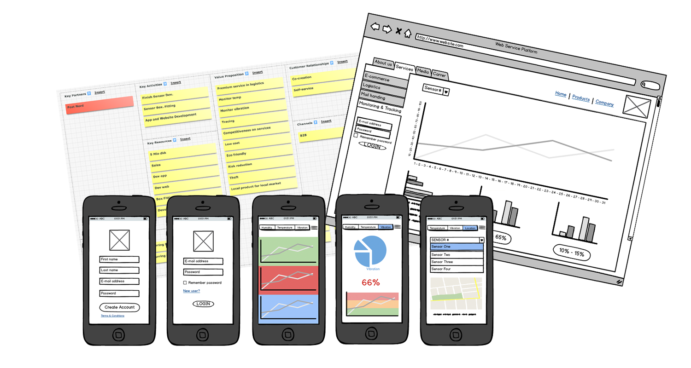
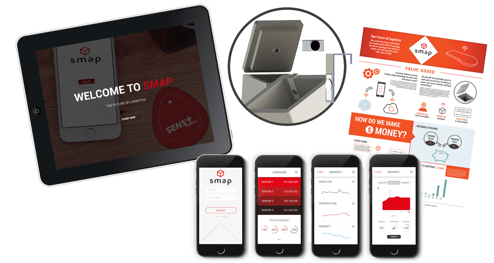

SMAP is a competitive sensor solution able to document the effectiveness delivery chain with precise measurements. The solutions can be customized to adapt to many segments, with different applications.
The platform is based on modules that can be combined according to the parameters required, such as acceleration, temperature, humidity or even location.
Problem
Fresh food delivery companies need to handle goods within temperature ranges. Today they must rely on their unbroken cooling chain, they have no way to monitor actual temperature, shock or humidity. This may lead to packages unnecessarily being intentionally destroyed, just to be on the safe side.
Goal
To develop a web application and mobile application for the logistics sector, aiming to monitor temperature, acceleration and motion activities through a small accelerometer sensor patch called SENS Motion.
Solution
A tracking sensor online system can allow logistic providers to offer premium services, if they do not already have a sensor solution. Their quality of service can increase, lowering their costs and increasing their revenue. Being able to document the effectiveness of their delivery chain with precise measurement, can contribute to a long term customer relationship as well.
- Investigation
- Brainstorming
- Market Research
- Business Plan
- Prototype
- Material Research
- Manufacturing Analysis
- Co-Creation
- Brandind
- UI/UX Design
- Product Development
- 2D Drawing
- 3D Rendering
- Front End
- Test
Design Process
- Illustrator
- Photoshop
- InDesign
- Balsamic
- HTML/CSS
- JavaScript
- SolidWorks
- CES Granta Design